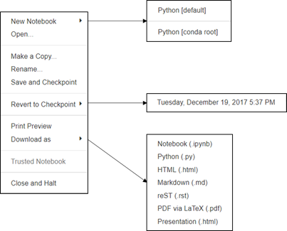

超快上手Jupyter Notebook
目录
- 简介
- 安装与运行
- 主面板(Notebook Dashboard)
- 编辑界面(Notebook Editor)
- 单元(Cell)
- 魔法函数
- 其他
一、简介
Jupyter Notebook是一个开源的Web应用程序，允许用户创建和共享包含代码、方程式、可视化和文本的文档。它的用途包括：数据清理和转换、数值模拟、统计建模、数据可视化、机器学习等等。它具有以下优势：
- 可选择语言：支持超过40种编程语言，包括Python、R、Julia、Scala等。
- 分享笔记本：可以使用电子邮件、Dropbox、GitHub和Jupyter Notebook Viewer与他人共享。
- 交互式输出：代码可以生成丰富的交互式输出，包括HTML、图像、视频、LaTeX等等。
- 大数据整合：通过Python、R、Scala编程语言使用Apache Spark等大数据框架工具。支持使用pandas、scikit-learn、ggplot2、TensorFlow来探索同一份数据。
二、安装与运行
虽然Jupyter可以运行多种编程语言，但Python是安装Jupyter Noterbook的必备条件（Python2.7，或Python3.3以上）。有两种安装方式：使用Anaconda安装或使用pip命令安装。关于安装的全部信息可以在官网读到：安装Jupyter。
2.1使用Anaconda安装
对于小白，强烈建议使用Anaconda发行版安装Python和Jupyter，其中包括Python、Jupyter Notebook和其他常用的科学计算和数据科学软件包。
首先，下载Anaconda。建议下载Anaconda的最新Python 3版本。其次，请按照下载页面上的说明安装下载的Anaconda版本。最后，安装成功！
2.2使用pip命令安装
对于有经验的Python用户，可以使用Python的包管理器pip而不是Anaconda 来安装Jupyter 。
如果已经安装了Python 3：1
2python3 -m pip install --upgrade pip
python3 -m pip install jupyter
如果已经安装了Python 2：1
2python -m pip install --upgrade pip
python -m pip install jupyter
恭喜，你已经成功安装好了！
2.3运行Jupyter Notebook
成功安装Jupyter Notebook后，在Terminal (Mac / Linux)或Command Prompt(Windows)中运行以下命令就可打开Jupyter Notebook。
1 | jupyter notebook |
三、主面板(Notebook Dashboard)
打开Notebook，可以看到主面板。在菜单栏中有Files、Running、Clusters、Conda四个选项。用到最多的是Files，我们可以在这里完成notebook的新建、重命名、复制等操作。具体功能如下：
在Running中，可以看到正在运行的notebook，我们可以选择结束正在运行的程序。
至于Clusters、Conda一般用不到，暂不做介绍，后续补充。
四、编辑界面(Notebook Editor)
一个notebook的编辑界面主要由四部分组成：名称、菜单栏、工具条以及单元(Cell)，如下图所示：
4.1 名称
在这里，我们可以修改notebook的名字，直接点击当前名称，弹出对话框进行修改：
4.2菜单栏
菜单栏中有File、Edit、View、Insert、Cell、Kernel、Help等功能，下面逐一介绍。
4.2.1 File
File中的按钮选项如下图所示：

具体功能如下表：
| 选项 | 功能 |
|---|---|
| New Notebook | 新建一个notebook |
| Open… | 在新的页面中打开主面板 |
| Make a Copy… | 复制当前notebook生成一个新的notebook |
| Rename… | notebook重命名 |
| Save and Checkpoint | 将当前notebook状态存为一个Checkpoint |
| Revert to Checkpoint | 恢复到此前存过的Checkpoint |
| Print Preview | 打印预览 |
| Download as | 下载notebook存为某种类型的文件 |
| Close and Halt | 停止运行并退出该notebook |
4.2.2 Edit
Edit中的按钮选项如下图所示：
| 选项 | 功能 |
|---|---|
| Cut Cells | 剪切单元 |
| Copy Cells | 复制单元 |
| Paste Cells Above | 在当前单元上方粘贴上复制的单元 |
| Paste Cells Below | 在当前单元下方粘贴上复制的单元 |
| Paste Cells & Replace | 替换当前的单元为复制的单元 |
| Delete Cells | 删除单元 |
| Undo Delete Cells | 撤回删除操作 |
| Split Cell | 从鼠标位置处拆分当前单元为两个单元 |
| Merge Cell Above | 当前单元和上方单元合并 |
| Merge Cell Below | 当前单元和下方单元合并 |
| Move Cell Up | 将当前单元上移一层 |
| Move Cell Down | 将当前单元下移一层 |
| Edit Notebook Metadata | 编辑notebook的元数据 |
| Find and Replace | 查找替换，支持多种替换方式：区分大小写、使用JavaScript正则表达式、在选中单元或全部单元中替换 |
4.2.3 View
View中的按钮选项如下图所示：
具体功能如下表：
| 选项 | 功能 |
|---|---|
| Toggle Header | 隐藏/显示Jupyter notebook的logo和名称 |
| Toggle Toolbar | 隐藏/显示Jupyter notebook的工具条 |
| Cell Toolbar | 更改单元展示式样 |
View中的功能可以让用户更好的展示自己的notebook，但对编写代码、实现功能没有影响。
4.2.4 Insert
功能：在当前单元上方/下方插入新的单元。
4.2.5 Cell
| 选项 | 功能 |
|---|---|
| Run Cells | 运行单元内代码 |
| Run Cells and Select Below | 运行单元内代码并将光标移动到下一单元 |
| Run Cells and Insert Below | 运行单元内代码并在下方新建一单元 |
| Run All | 运行所有单元内的代码 |
| Run All Above | 运行该单元（不含）上方所有单元内的代码 |
| Run All Below | 运行该单元（含）下方所有单元内的代码 |
| Cell Type | 选择单元内容的性质 |
| Current Outputs | 对当前单元的输出结果进行隐藏/显示/滚动/清除 |
| All Output | 对所有单元的输出结果进行隐藏/显示/滚动/清除 |
4.2.6 Kernel
| 选项 | 功能 |
|---|---|
| Interrupt | 中断与内核连接（等同于ctrl-c） |
| Restart | 重启内核 |
| Restart & Clear Output | 重启内核并清空现有输出结果 |
| Restart & Run All | 重启内核并重新运行notebook中的所有代码 |
| Reconnect | 重新连接到内核 |
| Change kernel | 切换内核 |
4.2.7 Help
| 选项 | 功能 |
|---|---|
| User Interface Tour | 用户使用指南，非常棒的功能，带你全面了解notebook |
| Keyboard Shortcuts | 快捷键大全 |
| Notebook Help | notebook使用指南 |
| Markdown | Markdown使用指南 |
| Python…pandas | 各类使用指南 |
| About | 关于Jupyter Notebook的一些信息 |
4.3 工具条
工具条中的功能基本上在菜单中都可以实现，这里是为了能更快捷的操作，将一些常用按钮放了出来。下图是对各按钮的解释。
4.4 单元(Cell)
在单元中我们可以编辑文字、编写代码、绘制图片等等。对于单元的详细内容放在第五节中介绍。
五、单元(Cell)
5.1两种模式与快捷键
对于Notebook中的单元，有两种模式：命令模式(Command Mode)与编辑模式(Edit Mode)，在不同模式下我们可以进行不同的操作。

如上图，在编辑模式(Edit Mode)下，右上角出现一只铅笔的图标，单元左侧边框线呈现出绿色，点Esc键或运行单元格(ctrl-enter)切换回命令模式。
在命令模式(Command Mode)下，铅笔图标消失，单元左侧边框线呈现蓝色，按Enter键或者双击cell变为编辑状态。
5.1.1命令模式下的快捷键
5.1.2编辑模式下的快捷键
注意不要死记硬背，在使用过程中需要什么就去查，多用用就能记住了。
5.2 Cell的四种功能
Cell有四种功能：Code、Markdown、Raw NBConvert、Heading，这四种功能可以互相切换。Code用于写代码，Markdown用于文本编辑，Raw NBConvert中的文字或代码等都不会被运行，Heading是用于设置标题的，这个功能已经包含在Markdown中了。四种功能的切换可以使用快捷键或者工具条。
Code用于写代码，三类提示符及含义如下：
| 提示符 | 含义 |
|---|---|
| In[ ] | 程序未运行 |
| In[num] | 程序运行后 |
| In[*] | 程序正在运行 |
Markdown用于编辑文本，给出常用的Markdown用法：
其他非常用的用法需要时可以再查阅。
六、魔法函数
使用魔法函数可以简单的实现一些单纯python要很麻烦才能实现的功能。
%：行魔法函数，只对本行代码生效。
%%：Cell魔法函数，在整个Cell中生效，必须放于Cell首行。
%lsmagic：列出所有的魔法函数
%magic查看各个魔法函数的说明
?后面加上魔法函数名称，可以查看该函数的说明
一些常用魔法函数的示例：
| 魔法函数 | 作用 |
|---|---|
| %%writefile | 调用外部python脚本 |
| %run | 调用外部python脚本 |
| %timeit | 测试单行语句的执行时间 |
| %%timeit | 测试整个单元中代码的执行时间 |
| % matplotlib inline | 显示 matplotlib 包生成的图形 |
| %%writefile | 写入文件 |
| %pdb | 调试程序 |
| %pwd | 查看当前工作目录 |
| %ls | 查看目录文件列表 |
| %reset | 清除全部变量 |
| %who | 查看所有全局变量的名称，若给定类型参数，只返回该类型的变量列表 |
| %whos | 显示所有的全局变量名称、类型、值/信息 |
| %xmode Plain | 设置为当异常发生时只展示简单的异常信息 |
| %xmode Verbose | 设置为当异常发生时展示详细的异常信息 |
| %debug | bug调试，输入quit退出调试 |
| %env | 列出全部环境变量 |
注意这些命令是在Python kernel中适用的，其他 kernel 不一定适用
七、其他
（1）按tab键查看提示信息或者补全命令
2）在一个库、方法或变量前加上 ?，就可以获得它的一个快速语法说明
（3）使用分号可以阻止该行函数的结果输出